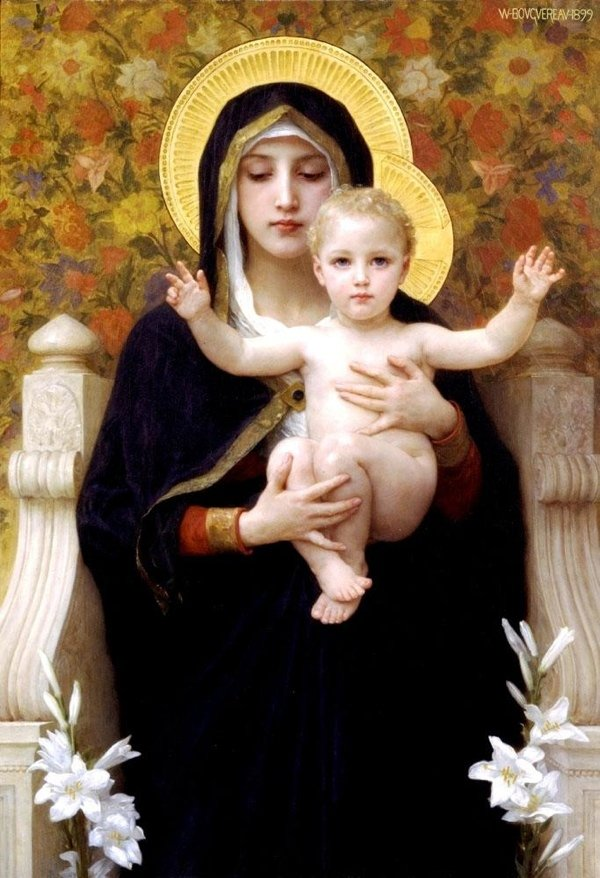
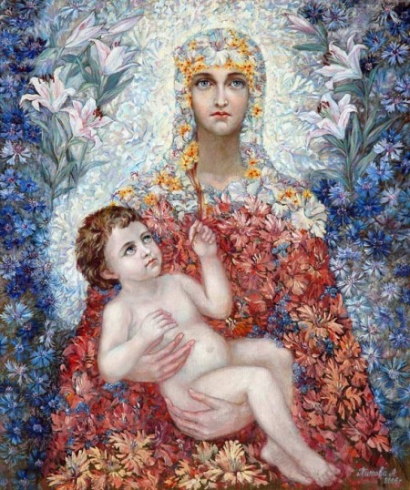
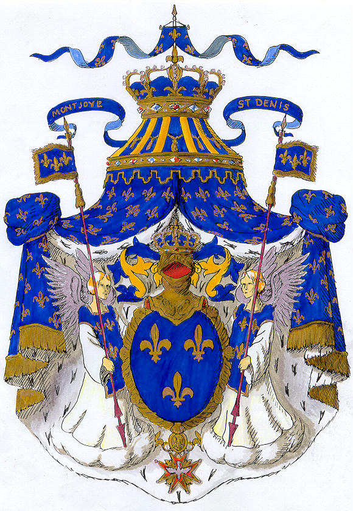
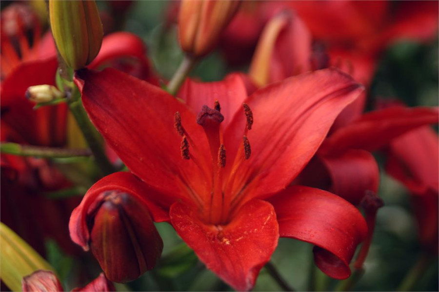
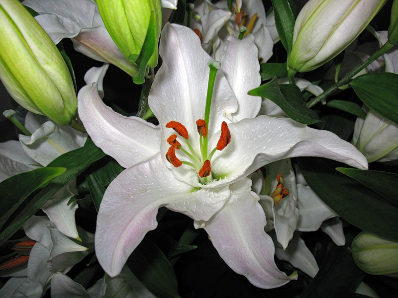

Хотя лилии бывают разных оттенков, но именно белым цветам придается особый символический смысл. Белая лилия - символизирует невинность и с давних времен олицетворяет чистоту и непорочность. Не случайно лилии - цветы невест. Да и само название цветка в переводе с древнегреческого означает "белый-белый". Греки приписывают ей божественное происхождение. Они считали, что белая лилия - символ невинности и чистоты выросла из молока матери богов - Геры (Юноны), которая нашла спрятанного от ее ревнивого взора младенца фиванской царицы Геркулеса и, зная божественное происхождение малютки, хотела дать ему молока. Но мальчик, почуяв в ней своего врага, укусил и оттолкнул ее, а молоко разлилось по небу, образовав Млечный путь. Несколько капель упали на землю и превратились в лилии.
Но гораздо ранее, чем грекам, лилия была известна древним персам, у которых даже столица называлась Суза, что означает "город лилий". Немалую роль играла лилия у римлян, особенно в их цветочных празднествах, посвященных богине весны - Флоре. У испанцев и итальянцев, а также на других католических землях лилия считается цветком Пресвятой Девы, и изображение Божьей Матери окружено гирляндой из этих цветов. В венках из лилий идут в этих странах девушки в первый раз к святому Причастию.
В Древнем Риме на празднике Флоры девушки соревновались в беге в честь цветка Лилии. Каждая девушка мечтала получить главный приз – венок из белых лилий. Венком из лилий и пшеничных колосьев увенчивали невесту и жениха, желая им чистой жизни, полной изобилия. Древнейшая из культивируемых растений лилия белоснежная в диком виде встречается в странах средиземноморского побережья, в малой азии, израиле. По мнению специалистов, белая лилия, которая состоит из шести лепестков, распустившихся в виде Маген Давида, и есть лилия, символизирующая еврейский народ. Зарубежные исследователи библейских текстов считают что она и есть "лилия долин" из песней соломоновых.
Но нигде лилия не имела такого исторического значения, как во Франции, где с ней связаны имена основателя французской монархии Хлодвига, королей Людовика VII, Филиппа III, Франциска I... Старинные предания повествуют о появлении лилии на знамени французских королей, как эмблемы королевской власти. Флёр-де-Лис (фр.fleur de lys или fleur de lis, дословно "цветок лилии", или лилия, или королевская лилия) - гербовая фигура, четвёртая по популярности среди естественных геральдических символов после креста, орла и льва. Франция называлась царством лилий, а французский король - королём лилий.
По преданию король Хлодвиг одолел с ее помощью врагов христианства. Хлодвиг взял себе в качестве эмблемы лилию после того, как водяные лилии в Рейне подсказали ему безопасное место, где можно перейти реку вброд, благодаря чему он одержал победу в битве. Людовик VII избрал лилию своей эмблемой. Три лилии красовались на знамёнах Людовика IХ Святого во время крестовых походов и обозначали три добродетели: милосердие, сострадание и правосудие.
Французский король Карл VII, желая почтить память Жанны д"Арк, не находит ничего более высокого и благородного, как возвести её родных в дворянское достоинство под фамилией Лилиевых и дать им герб, представляющий собой меч на синем поле с двумя лилиями по бокам и венком из этих цветов наверху. При Людовике ХII лилия становится главным украшением всех садов Франции и называется цветком Людовика. Лилия пользовалась вообще большой любовью во Франции. Цветок этот считался искони выражением высшей степени благоволения и уважения, и потому в аристократических семьях было в обычае, чтобы жених посылал своей невесте каждое утро, вплоть до самой свадьбы, букет из живых цветов, среди которых должно было быть непременно несколько белых лилий. Интересно то, что белая лилия в средние века, служившая напоминанием о вечности, в эпоху Возрождения стала символом распущенности, клеймо на плече у представительниц древнейшей профессии напоминало лилию.
В древнегерманской мифологии бог грома Тор всегда изображался держащим молнию в правой руке, а скипетр, увенчанный лилией, в левой. Ею же украшалось чело древних обитателей Померании во время празднеств в честь богини весны, а благоухающий ее венчик служил в германском сказочном мире волшебным жезлом для Оберона и жилищем маленьких сказочных созданий - эльфов.
По этим сказаниям, каждая лилия имела своего эльфа, который вместе с нею рождался и вместе с нею умирал. Венчики этих цветов служили этим крошечным созданиям, колокольчиками, и качая их, они созывали на молитву своих благочестивых собратьев. Молитвенные собрания происходили обыкновенно в поздний вечерний час, когда в садах все успокоивалось и погружалось в глубокий сон. Тогда один из эльфов бежал к гибкому стеблю лилии и начинал его качать. Колокольчики лилий звонили и будили своим серебристым звоном сладко спящих эльфов. Крошечные существа просыпались, вылезали из своих мягких постелек и молча с важностью отправлялись в венчики лилий, которые служили им в то же время молельнями. Здесь они преклоняли свои колена, складывали набожно ручки и благодарили в горячей молитве Создателя за ниспосланные им блага. Помолившись, они так же молча спешили назад в свои цветочные люлечки и вскоре опять засыпали глубоким, беспечным сном...
В Германии с лилией связано немало сказаний о загробной жизни. Она служит у немцев свидетельством преданности. И у древних иудеев цветок лилии пользовался большой любовью и непорочностью. По еврейским сказаниям, цветок этот рос во время искушения Евы дьяволом и мог оскверниться им, но ничья грязная рука не осмелилась коснуться его. Поэтому евреи украшали им священные алтари, капители колонн храма Соломона. При строительстве храма Соломона, великий тирский архитектор придал изящную форму лилии чудным капителям громадных колонн, а так же украсил изображениями лилии его стены и потолок, разделяя мнение с евреями, что цветок этот красой своей будет способствовать усилению молитвенного настроения среди молящихся в храме.
О красной лилии рассказывают, что она поменяла цвет в ночь перед крестным страданием Христа. Когда Спаситель проходил по Гефсиманскому саду, то в знак сострадания и печали перед ним склонили головы все цветы, кроме лилии, которая хотела, чтобы он насладился ее красотой. Но когда страдальческий взор упал на нее, то румянец стыда за свою гордость в сравнении с его смирением разлился по ее лепесткам и остался навсегда.
Лилия встречается и у египтян, у которых ее изображение то и дело попадается в иероглифах, и обозначает то кратковременность жизни, то свободу и надежду. Кроме того, белыми лилиями, по-видимому, украшали тела умерших молодых египетских девушек. Подобная лилия была найдена на груди мумии молодой египтянки, хранящейся теперь в Луврском музее в Париже. Из этого же цветка египтяне готовили знаменитое в древности благовонное масло - сузинон, о котором подробно говорится у Гиппократа в его трактате "О природе женщины".
.
.
Что разум человека может постигнуть и во что он может поверить, того он способен достичь
Своим успехом я обязана тому, что никогда не оправдывалась и не принимала оправданий от других.
Через 20 лет вы будете больше разочарованы теми вещами, которые вы не делали, чем теми, которые вы сделали. Так отчальте от тихой пристани. Почувствуйте попутный ветер в вашем парусе. Двигайтесь вперед, действуйте, открывайте!
Свобода ничего не стоит, если она не включает в себя свободу ошибаться.